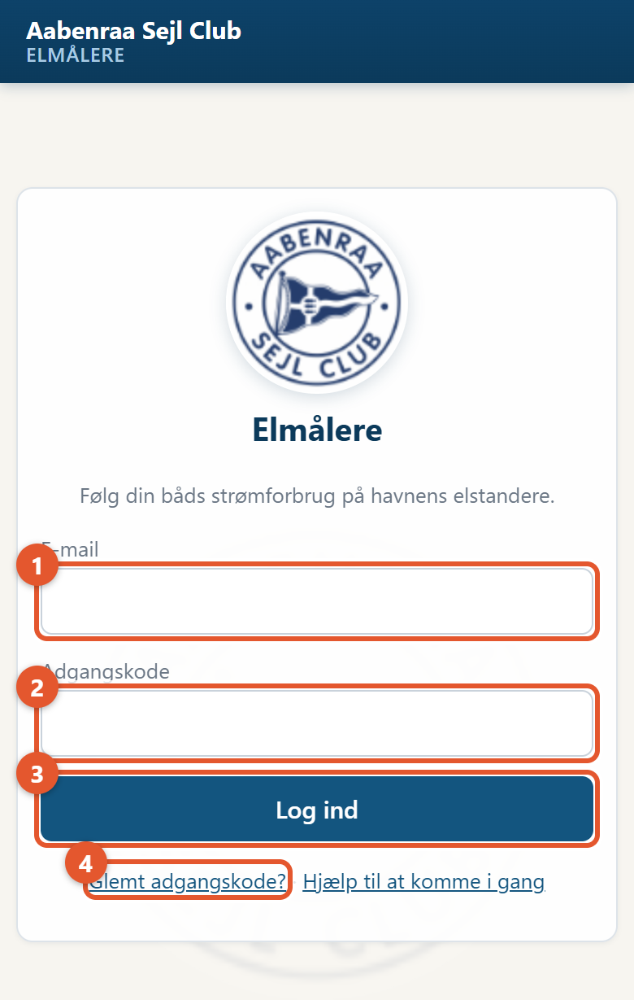
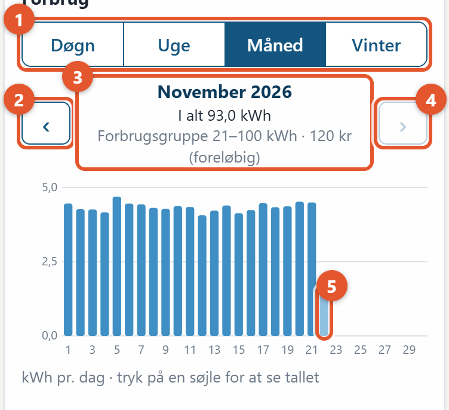

1Log ind

- Klik på linket i invitationen, du har fået på e-mail, og vælg en adgangskode (mindst 8 tegn).
- Log ind med e-mail og adgangskode.
- Glemt adgangskode? Tryk på linket og få en ny på e-mail.
- Tip: læg siden på telefonens hjemmeskærm – iPhone: del ⬆ → Føj til hjemmeskærm. Android: ⋮ → Føj til startskærm.
2Min side

- Samlet for alle dine både (kun ved flere både).
- Faner – én pr. båd. Grøn prik = forbindelse, rød = ingen.
- Status – online eller offline.
- Bruger lige nu i watt. Opdateres af sig selv.
3Forbrug og pris

- Ampere af standerens 16 A. Orange = tæt på at sikringen springer.
- Hvad forbruget svarer til, fx køleskab eller varmeblæser.
- Månedens forbrugsgruppe og pris indtil nu.
- Bjælken: hvor tæt du er på næste, dyrere gruppe.
- Prognose for hele måneden.
4Grafen

- Vælg Døgn (kl. 00–24), Uge, Måned eller Vinter.
- ‹ bladr tilbage – eller swipe mod højre.
- Perioden, forbrug i alt og gruppe.
- › bladr frem.
- Lys søjle = i dag / denne time.
Tryk på en søjle for at se det præcise tal – og gå videre til døgnet time for time.